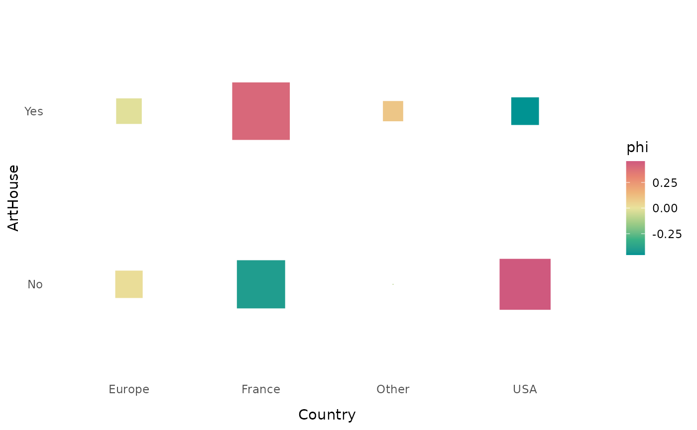
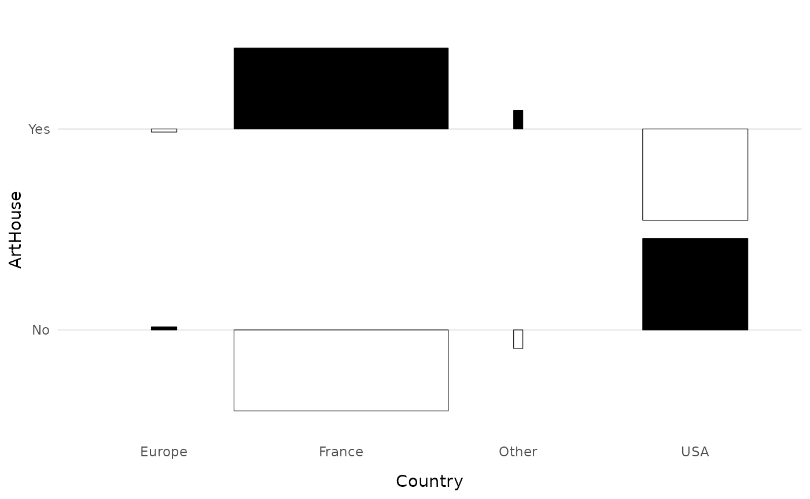
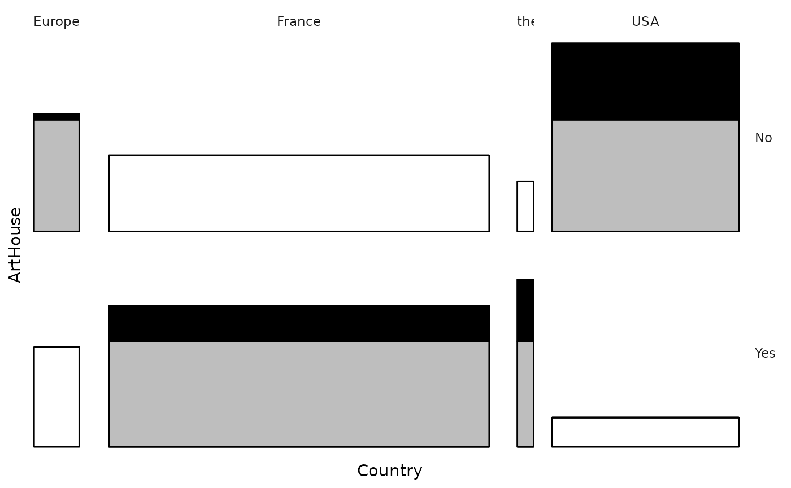
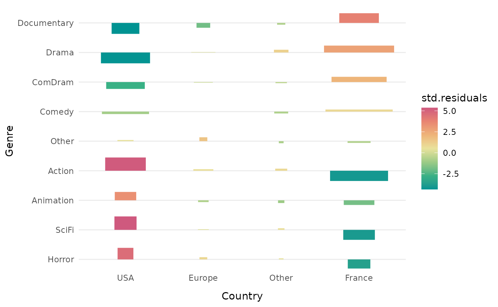
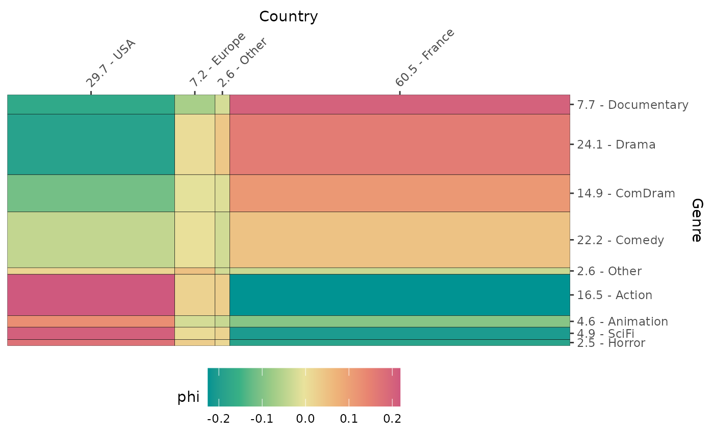
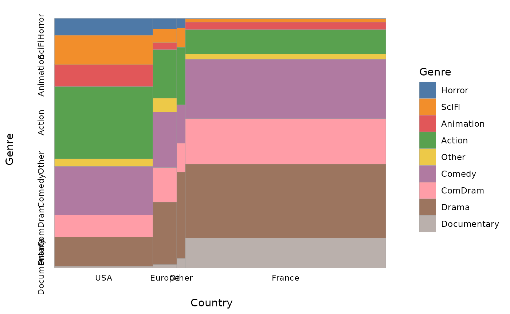
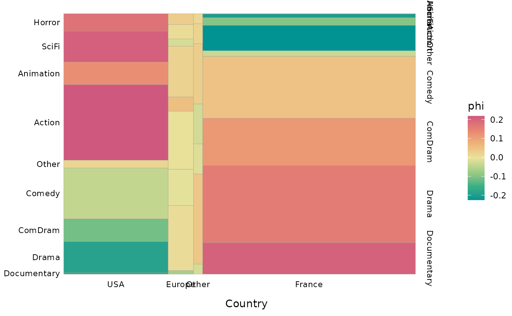
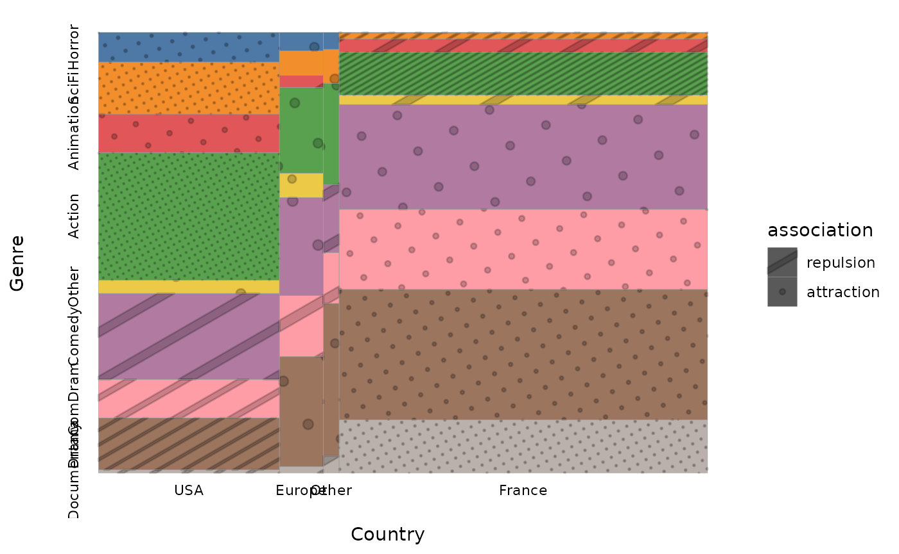
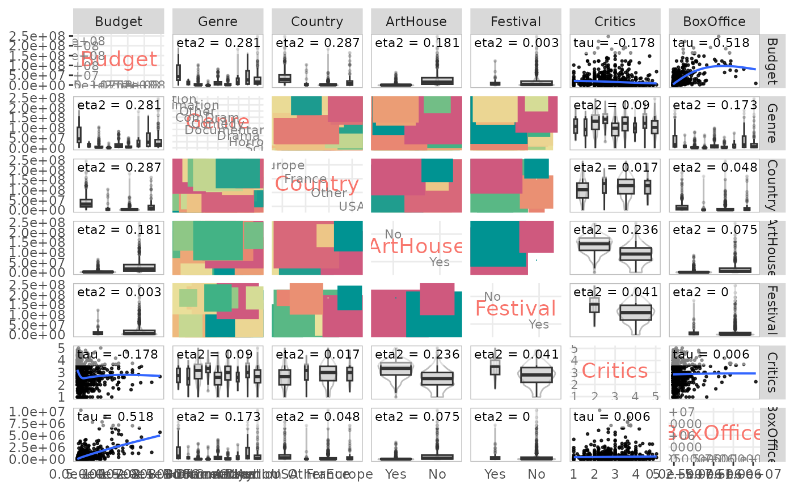

vignettes/articles/Article_eng.Rmd
Article_eng.Rmd
descriptio package provides some functions dedicated to
the description of statistical associations between variables. They are
based on effect size measures (also called association measures).
The main measures are built from simple concepts (correlations, proportion of variance explained), they are bounded (between -1 and 1 or between 0 and 1) and are not sensitive to the number of observations.
The main measures of global association are the following.
For the relationship between two categorical variables: the Cramér’s V which, unlike the chi-square, for example, is not sensitive to the number of observations or the number of categories of the variables. It varies between 0 (no association) and 1 (perfect association). Squared, it can be interpreted as the share of variation shared between two variables.
For the relationship between two numerical variables: Kendall’s (tau) or Spearman’s (rho) rank correlations, which detect monotonic relationships between variables, and not only linear ones as is the case with Pearson’s linear correlation. They vary between -1 and 1. An absolute value of 0 indicates no association, an absolute value of 1 a perfect association. The sign indicates the direction of the relationship.
For the relationship between a categorical variable and a numerical variable: the square of the correlation ratio (eta²). It expresses the proportion of the variance of the numerical variable “explained” by the categorical variable and varies between 0 and 1.
In addition to measures of global association, we also use measures of local association, i.e. at the level of the categories of the variables.
For the relationship between two categorical variables: the phi coefficient measures the attraction or repulsion in a cell of a contingency table. It varies between -1 and 1. An absolute value of 0 indicates an absence of association, an absolute value of 1 a perfect association. There is attraction if the sign is positive, repulsion if the sign is negative. Squared, phi is interpreted as the proportion of variance shared by the two binary variables associated with the categories studied. Unlike the test value, phi is not sensitive to the sample size.
For the relationship between a categorical variable and a numerical variable: the point biserial correlation measures the magnitude of the difference between the means of the numerical variable according to whether or not one belongs to the category studied. It varies between -1 and 1. An absolute value of 0 indicates no association, an absolute value of 1 a perfect association. The sign indicates the direction of the relationship. When squared, point biserial correlation can be interpreted as the proportion of variance of the numerical variable “explained” by the category of the categorical variable.
Note that if we code the categories of the categorical variables as binary variables with values of 0 or 1, the phi coefficient and the point biserial correlation are equivalent to Pearson’s correlation coefficient.
For more details on these effect size measurements, see: Rakotomalala
R., « Comprendre
la taille d’effet (effect size) »
In some functions of descriptio, association measures
can be completed by permutation tests, which are part
of combinatorial inference and constitute a
nonparametric alternative to the significance tests of
frequentist inference. A permutation test is performed in several
steps.
A measure of association between the two variables under study is computed.
The same measure of association is calculated from a “permuted” version of the data, i.e. by randomly “mixing” the values of one of the variables, in order to “break” the relationship between the variables.
Repeat step 2 a large number of times. This gives an empirical distribution (as opposed to the use of a theoretical distribution by frequentist inference) of the measure of association under the H0 hypothesis of no relationship between the two variables.
The result of step 1 is compared with the distribution obtained in 3. The p-value of the permutation test is the proportion of values of the H0 distribution that are more extreme than the measure of association observed in 1.
If all possible permutations are performed, the permutation test is
called “exact”. In practice, the computation time required is often too
important and only a part of the possible permutations is performed,
resulting in an “approximate” test. In the following examples, the
number of permutations is set to 100 to reduce the computation time, but
it is advisable to increase this number to obtain more accurate and
reliable results (for example nperm=1000).
To illustrate the statistical association analysis functions of
descriptio, we will use data on cinema. This is a sample of
1000 films released in France in the 2000s, for which we know the
budget, the genre, the country of origin, the “art et essai” label, the
selection in a festival (Cannes, Berlin or Venice), the average rating
of intellectual critics (according to Allociné) and the number of
admissions. Some of these variables are numerical, others are
categorical.
library(descriptio)
data(Movies)
str(Movies)
'data.frame': 1000 obs. of 7 variables:
$ Budget : num 3.10e+07 4.88e+06 3.50e+06 1.63e+08 2.17e+07 ...
$ Genre : Factor w/ 9 levels "Action","Animation",..: 1 5 7 1 7 5 1 7 5 7 ...
$ Country : Factor w/ 4 levels "Europe","France",..: 4 2 2 1 2 2 4 4 2 4 ...
$ ArtHouse : Factor w/ 2 levels "No","Yes": 1 1 2 1 2 1 1 1 1 1 ...
$ Festival : Factor w/ 2 levels "No","Yes": 1 1 1 1 1 1 1 1 1 1 ...
$ Critics : num 3 1 3.75 3.75 3.6 2.75 1 1 1 3 ...
$ BoxOffice: num 1013509 24241 39376 6996996 493416 ...The package offers several functions to study the statistical relationship between two variables, depending on the nature (categorical or numerical) of these variables.
The function assoc_twocat computes :
res <- assoc.twocat(Movies$Country, Movies$ArtHouse, nperm=100)
res$tables
$freq
No Yes Sum
Europe 39 33 72
France 212 393 605
Other 6 20 26
USA 257 40 297
Sum 514 486 1000
$prop
No Yes Sum
Europe 3.9 3.3 7.2
France 21.2 39.3 60.5
Other 0.6 2.0 2.6
USA 25.7 4.0 29.7
Sum 51.4 48.6 100.0
$rprop
No Yes Sum
Europe 54.16667 45.83333 100
France 35.04132 64.95868 100
Other 23.07692 76.92308 100
USA 86.53199 13.46801 100
Sum 51.40000 48.60000 100
$cprop
No Yes Sum
Europe 7.587549 6.790123 7.2
France 41.245136 80.864198 60.5
Other 1.167315 4.115226 2.6
USA 50.000000 8.230453 29.7
Sum 100.000000 100.000000 100.0
$expected
No Yes
Europe 37.008 34.992
France 310.970 294.030
Other 13.364 12.636
USA 152.658 144.342
res$global
$chi.squared
[1] 220.1263
$cramer.v
[1] 0.4691762
$permutation.pvalue
[1] 0
$global.pem
[1] 64.04814
$GK.tau.xy
[1] 0.2201263
$GK.tau.yx
[1] 0.1537807
res$local
$std.residuals
No Yes
Europe 0.3274474 -0.3367479
France -5.6123445 5.7717531
Other -2.0143992 2.0716146
USA 8.4449945 -8.6848595
$adj.residuals
No Yes
Europe 0.487584 -0.487584
France -12.809366 12.809366
Other -2.927844 2.927844
USA 14.447862 -14.447862
$odds.ratios
No Yes
Europe 1.1270813 0.8872474
France 0.1661190 6.0197809
Other 0.2751969 3.6337625
USA 11.1500000 0.0896861
$local.pem
y
x No Yes
Europe 5.69273 -5.69273
France -51.55493 51.55493
Other -55.10326 55.10326
USA 72.28804 -72.28804
$phi
No Yes
Europe 0.01541876 -0.01541876
France -0.40506773 0.40506773
Other -0.09258656 0.09258656
USA 0.45688150 -0.45688150
$phi.perm.pval
No Yes
Europe 2.477658e-01 2.477658e-01
France 3.827434e-38 0.000000e+00
Other 4.653680e-04 4.653680e-04
USA 0.000000e+00 6.064366e-51
res$gather
var.y var.x freq prop rprop cprop expected std.residuals adj.residuals or pem phi perm.pval freq.x freq.y prop.x prop.y
1 No Europe 39 0.039 0.5416667 0.07587549 37.008 0.3274474 0.487584 1.1270813 5.69273 0.01541876 2.477658e-01 72 514 0.072 0.514
2 No France 212 0.212 0.3504132 0.41245136 310.970 -5.6123445 -12.809366 0.1661190 -51.55493 -0.40506773 3.827434e-38 605 514 0.605 0.514
3 No Other 6 0.006 0.2307692 0.01167315 13.364 -2.0143992 -2.927844 0.2751969 -55.10326 -0.09258656 4.653680e-04 26 514 0.026 0.514
4 No USA 257 0.257 0.8653199 0.50000000 152.658 8.4449945 14.447862 11.1500000 72.28804 0.45688150 0.000000e+00 297 514 0.297 0.514
[ reached 'max' / getOption("max.print") -- omitted 4 rows ]
The function ggassoc_crosstab presents the contingency
table in graphical form, with rectangles whose area corresponds to the
number of observations and whose color gradient corresponds to the
attraction/repulsion (from one of the local association measures
proposed in assoc.twocat, here the phi coefficients). The
“art et essai” label is clearly over-represented among French films and
under-represented among American films.
ggassoc_crosstab(Movies, ggplot2::aes(x=Country, y=ArtHouse))
The function ggassoc_phiplot proposes another way to
represent the attractions/repulsions. The width of the rectangles
corresponds to the numbers of the variable x, their height to the local
associations (by default phi coefficients). The rectangles are colored
in black when there is attraction, in white when there is repulsion.
ggassoc_phiplot(Movies, ggplot2::aes(x=Country, y=ArtHouse))
The function ggassoc_bertin is inspired by Jacques
Bertin’s principles of graphical semiology for the representation of a
data matrix and by the tool AMADO
Online. The height of the bars corresponds to the conditional
probabilities of y given x. They are colored black when the conditional
probabilities are greater than the marginal probabilities of y. The
width of the bars can be adjusted to be proportional to the marginal
probabilities of x.
ggassoc_bertin(Movies, ggplot2::aes(x=Country, y=ArtHouse), prop.width = TRUE, add.gray = TRUE)
The function ggassoc_assocplot produces an “association
plot” as proposed by Cohen (1980) and Friendly (1992). The width of the
bars is proportional to the square root of the theoretical numbers. The
height of the bars and the color gradient are proportional to the local
associations. If these local associations are measured by Pearson
residuals (the default choice), the area of the bars is proportional to
the difference between the theoretical and observed numbers.
When the number of categories of the variables is high, as here when we cross the genre of the film and its geographical origin, it can be useful to sort the rows and/or the columns so that those which are similar are close.
We see that action, animation, science fiction and horror films are over-represented among American films, and that documentaries, dramas and comedy-dramas are over-represented among French films.
ggassoc_assocplot(Movies, ggplot2::aes(x=Country, y=Genre), sort = "both")
The function ggassoc_chiasmogram draws a “chiasmogram”,
a graphical representation proposed by Bozon and Héran (1988). The width
of the rectangles is proportional to the marginal probabilities of the
variable in column, their height is proportional to the marginal
probabilities of the variable in row. The surface area of the rectangles
is therefore proportional to the theoretical numbers. The rectangles are
colored according to the degree of local association (by default the phi
coefficients).
ggassoc_chiasmogram(Movies, ggplot2::aes(x=Country, y=Genre), sort = "both")
The function ggassoc_marimekko produces marimekko
charts, also called mosaic plots. The width of the bars is proportional
to the marginal probabilities of the variable x, their height to the
conditional probabilities of the variable y given x.
ggassoc_marimekko(Movies, ggplot2::aes(x=Country, y=Genre), sort = "both", type = "classic")
We can choose to color the bars according to the degree of local association (here the phi coefficients), as proposed by Friendly (1994).
ggassoc_marimekko(Movies, ggplot2::aes(x=Country, y=Genre), sort = "both", type = "shades")
We can also choose to replace the gradient of colors by textures more or less dense according to the degree of local association.
ggassoc_marimekko(Movies, ggplot2::aes(x=Country, y=Genre), sort = "both", type = "patterns")
The assoc_catcont function computes:
assoc.catcont(Movies$Country, Movies$Critics, nperm=100)
$eta.squared
[1] 0.0169216
$permutation.pvalue
[1] 1.233629e-08
$cor
Europe France Other USA
0.011 0.102 0.036 -0.128
$cor.perm.pval
Europe France Other USA
3.757421e-01 1.423479e-03 6.777415e-02 3.872335e-05
The function ggassoc_boxplot represents the relationship
between the variables in the form of box-plots and/or “violin”
distributions.
ggassoc_boxplot(Movies, ggplot2::aes(x=Country, y=Critics))The function assoc_twocont computes the Kendall and
Spearman rank correlations and the Pearson linear correlation, as well
as the p-values of the corresponding permutation tests.
assoc.twocont(Movies$Budget, Movies$BoxOffice, nperm=100)
pearson spearman kendall
value 0.6053018 0.7084613 0.5184719
permutation.pvalue 0.0000000 0.0000000 0.0000000
The function ggassoc_scatter represents the relationship
between the two variables in the form of a scatterplot, with an
approximation by smoothing (with the “Generalized Additive Model”
method).
ggassoc_scatter(Movies, ggplot2::aes(x=Budget, y=BoxOffice))Often, not just two variables are studied, but a larger set of
variables. When one of these variables has the status of an “explained”
variable, one generally uses regression models or, possibly, supervised
learning models (see the vignette of the moreparty package
for an example). However, it is essential to know all the bivariate
relations of the dataset before moving to an “all else being equal”
approach.
It should be noted that if we do this work in a meticulous way,
adding eventually the descriptive analysis of the relationships between
three or four variables, we often realize that the surplus of knowledge
brought by the regression models is quite limited.
The function assoc.yx computes the global association
between Y and each of the variables of X, and for all pairs of variables
of X.
assoc.yx(Movies$BoxOffice, Movies[,-7], nperm=10)
$YX
variable measure association permutation.pvalue
1 Genre Eta2 0.173 0.000
2 ArtHouse Eta2 0.075 0.000
3 Country Eta2 0.048 0.000
4 Budget Kendall tau 0.518 0.000
5 Critics Kendall tau 0.006 0.298
6 Festival Eta2 0.000 0.855
$XX
variable1 variable2 measure association permutation.pvalue
1 Genre ArtHouse Cramer V 0.554 0.000
2 Country ArtHouse Cramer V 0.469 0.000
3 Genre Country Cramer V 0.275 0.000
4 ArtHouse Festival Cramer V 0.229 0.000
5 Genre Festival Cramer V 0.183 0.000
6 Budget Country Eta2 0.287 0.000
7 Budget Genre Eta2 0.281 0.000
8 ArtHouse Critics Eta2 0.236 0.000
9 Budget ArtHouse Eta2 0.181 0.000
10 Genre Critics Eta2 0.090 0.000
11 Festival Critics Eta2 0.041 0.000
12 Country Critics Eta2 0.017 0.000
13 Budget Critics Kendall tau -0.178 0.000
14 Budget Festival Eta2 0.003 0.174
15 Country Festival Cramer V 0.035 0.866
The functions catdesc and condesc allow to go
into more detail about the relationships, by going to the category
level.
catdesc deals with the cases where Y is a categorical
variable. For a categorical variable X1, it computes, for a given
category of Y and a category of X1 :
The results are sorted by decreasing local association and can be filtered to keep only the associations above a given threshold (in absolute value).
For a numerical variable X2, for a given category of Y, it computes :
Dispersion is measured by the “median absolute deviation” (MAD), which is the median of the absolute deviations from the median. The median and MAD are so-called “robust” indicators, i.e. not sensitive to outliers, but one can choose to use the mean and standard deviation instead.
res <- catdesc(Movies$Festival, Movies[,-5], nperm = 10)
res$bylevel$Yes
$categories
categories pct.ycat.in.xcat pct.xcat.in.ycat pct.xcat.global phi
2 ArtHouse.Yes 0.140 0.883 0.486 0.229
3 Genre.Drama 0.149 0.468 0.241 0.153
9 Genre.Other 0.115 0.039 0.026 0.024
10 Country.Europe 0.097 0.091 0.072 0.021
11 Country.France 0.081 0.636 0.605 0.019
12 Genre.ComDram 0.087 0.169 0.149 0.016
14 Genre.Action 0.079 0.169 0.165 0.003
16 Country.Other 0.077 0.026 0.026 0.000
18 Genre.SciFi 0.061 0.039 0.049 -0.013
23 Country.USA 0.064 0.247 0.297 -0.032
24 Genre.Animation 0.022 0.013 0.046 -0.046
25 Genre.Horror 0.000 0.000 0.025 -0.046
26 Genre.Documentary 0.026 0.026 0.077 -0.055
27 Genre.Comedy 0.027 0.078 0.222 -0.100
29 ArtHouse.No 0.018 0.117 0.514 -0.229
$continuous.var
variables median.x.in.ycat median.x.global mad.x.in.ycat mad.x.global cor
1 Critics 3.5 3.0 0.7 0.6 0.204
3 BoxOffice 198796.0 107326.5 181590.0 104060.0 0.008
5 Budget 7000000.0 6127500.0 4438000.0 5156921.0 -0.057condesc deals with the cases where Y is a numerical
variable. For a categorical variable X1, it computes :
The results are sorted by decreasing point biserial correlation and can be filtered to keep only associations above a given threshold (in absolute value).
For the numerical variables of X, it calculates the correlation (by default Kendall’s tau).
condesc(Movies$BoxOffice, Movies[,-7], nperm=100)
$variables
variable measure association permutation.pvalue
1 Genre Eta2 0.173 0.000
2 ArtHouse Eta2 0.075 0.000
3 Country Eta2 0.048 0.000
4 Budget Kendall tau 0.518 0.000
5 Critics Kendall tau 0.006 0.383
6 Festival Eta2 0.000 0.731
$categories
categories median.y.in.xcat median.y.global mad.y.in.xcat mad.y.global cor
9 Genre.SciFi 680900 107326 607448 104060 0.294
14 ArtHouse.No 264200 107326 232183 104060 0.274
2 Genre.Animation 668896 107326 633265 104060 0.211
13 Country.USA 328559 107326 274892 104060 0.192
1 Genre.Action 240080 107326 202793 104060 0.087
10 Country.Europe 108122 107326 104607 104060 0.068
17 Festival.Yes 198796 107326 181590 104060 0.008
5 Genre.Comedy 202090 107326 191819 104060 0.004
3 Genre.Other 186084 107326 171739 104060 -0.005
16 Festival.No 102726 107326 99642 104060 -0.008
12 Country.Other 55643 107326 37068 104060 -0.013
8 Genre.Horror 302635 107326 171803 104060 -0.015
[ reached 'max' / getOption("max.print") -- omitted 5 rows ]
The darma function presents the results in a form close to
that of a table of results of a regression.
When the variable Y is numerical, the function computes :
res <- darma(Movies$BoxOffice, Movies[,-7], nperm=10)| variable | measure | association | permutation.pvalue |
|---|---|---|---|
| ArtHouse | Cramer V | 0.229 | 0.000 |
| Genre | Cramer V | 0.183 | 0.000 |
| Critics | Eta2 | 0.041 | 0.000 |
| Budget | Eta2 | 0.003 | 0.070 |
| Country | Cramer V | 0.035 | 0.485 |
| BoxOffice | Eta2 | 0.000 | 0.885 |
| categories | pct.ycat.in.xcat | pct.xcat.in.ycat | pct.xcat.global | phi |
|---|---|---|---|---|
| ArtHouse.No | 0.982 | 0.547 | 0.514 | 0.229 |
| Genre.Comedy | 0.973 | 0.234 | 0.222 | 0.100 |
| Genre.Documentary | 0.974 | 0.081 | 0.077 | 0.055 |
| Genre.Horror | 1.000 | 0.027 | 0.025 | 0.046 |
| Genre.Animation | 0.978 | 0.049 | 0.046 | 0.046 |
| Country.USA | 0.936 | 0.301 | 0.297 | 0.032 |
| Genre.SciFi | 0.939 | 0.050 | 0.049 | 0.013 |
| Country.Other | 0.923 | 0.026 | 0.026 | 0.000 |
| Genre.Action | 0.921 | 0.165 | 0.165 | -0.003 |
| Genre.ComDram | 0.913 | 0.147 | 0.149 | -0.016 |
| Country.France | 0.919 | 0.602 | 0.605 | -0.019 |
| Country.Europe | 0.903 | 0.070 | 0.072 | -0.021 |
| Genre.Other | 0.885 | 0.025 | 0.026 | -0.024 |
| Genre.Drama | 0.851 | 0.222 | 0.241 | -0.153 |
| ArtHouse.Yes | 0.860 | 0.453 | 0.486 | -0.229 |
| variables | median.x.in.ycat | median.x.global | mad.x.in.ycat | mad.x.global | cor |
|---|---|---|---|---|---|
| Budget | 6034248.0 | 6127500.0 | 5160544.0 | 5156921.0 | 0.057 |
| BoxOffice | 102726.0 | 107326.5 | 99642.0 | 104060.0 | -0.008 |
| Critics | 2.8 | 3.0 | 0.6 | 0.6 | -0.204 |
| categories | pct.ycat.in.xcat | pct.xcat.in.ycat | pct.xcat.global | phi |
|---|---|---|---|---|
| ArtHouse.Yes | 0.140 | 0.883 | 0.486 | 0.229 |
| Genre.Drama | 0.149 | 0.468 | 0.241 | 0.153 |
| Genre.Other | 0.115 | 0.039 | 0.026 | 0.024 |
| Country.Europe | 0.097 | 0.091 | 0.072 | 0.021 |
| Country.France | 0.081 | 0.636 | 0.605 | 0.019 |
| Genre.ComDram | 0.087 | 0.169 | 0.149 | 0.016 |
| Genre.Action | 0.079 | 0.169 | 0.165 | 0.003 |
| Country.Other | 0.077 | 0.026 | 0.026 | 0.000 |
| Genre.SciFi | 0.061 | 0.039 | 0.049 | -0.013 |
| Country.USA | 0.064 | 0.247 | 0.297 | -0.032 |
| Genre.Animation | 0.022 | 0.013 | 0.046 | -0.046 |
| Genre.Horror | 0.000 | 0.000 | 0.025 | -0.046 |
| Genre.Documentary | 0.026 | 0.026 | 0.077 | -0.055 |
| Genre.Comedy | 0.027 | 0.078 | 0.222 | -0.100 |
| ArtHouse.No | 0.018 | 0.117 | 0.514 | -0.229 |
| variables | median.x.in.ycat | median.x.global | mad.x.in.ycat | mad.x.global | cor |
|---|---|---|---|---|---|
| Critics | 3.5 | 3.0 | 0.7 | 0.6 | 0.204 |
| BoxOffice | 198796.0 | 107326.5 | 181590.0 | 104060.0 | 0.008 |
| Budget | 7000000.0 | 6127500.0 | 4438000.0 | 5156921.0 | -0.057 |
When the variable Y is categorical, the function computes :
res <- darma(Movies$Festival, Movies[,-5], target=2, nperm=10)| variable | measure | association | permutation.pvalue |
|---|---|---|---|
| ArtHouse | Cramer V | 0.229 | 0.000 |
| Genre | Cramer V | 0.183 | 0.000 |
| Critics | Eta2 | 0.041 | 0.000 |
| Budget | Eta2 | 0.003 | 0.070 |
| Country | Cramer V | 0.035 | 0.485 |
| BoxOffice | Eta2 | 0.000 | 0.885 |
| categories | pct.ycat.in.xcat | pct.xcat.in.ycat | pct.xcat.global | phi |
|---|---|---|---|---|
| ArtHouse.No | 0.982 | 0.547 | 0.514 | 0.229 |
| Genre.Comedy | 0.973 | 0.234 | 0.222 | 0.100 |
| Genre.Documentary | 0.974 | 0.081 | 0.077 | 0.055 |
| Genre.Horror | 1.000 | 0.027 | 0.025 | 0.046 |
| Genre.Animation | 0.978 | 0.049 | 0.046 | 0.046 |
| Country.USA | 0.936 | 0.301 | 0.297 | 0.032 |
| Genre.SciFi | 0.939 | 0.050 | 0.049 | 0.013 |
| Country.Other | 0.923 | 0.026 | 0.026 | 0.000 |
| Genre.Action | 0.921 | 0.165 | 0.165 | -0.003 |
| Genre.ComDram | 0.913 | 0.147 | 0.149 | -0.016 |
| Country.France | 0.919 | 0.602 | 0.605 | -0.019 |
| Country.Europe | 0.903 | 0.070 | 0.072 | -0.021 |
| Genre.Other | 0.885 | 0.025 | 0.026 | -0.024 |
| Genre.Drama | 0.851 | 0.222 | 0.241 | -0.153 |
| ArtHouse.Yes | 0.860 | 0.453 | 0.486 | -0.229 |
| variables | median.x.in.ycat | median.x.global | mad.x.in.ycat | mad.x.global | cor |
|---|---|---|---|---|---|
| Budget | 6034248.0 | 6127500.0 | 5160544.0 | 5156921.0 | 0.057 |
| BoxOffice | 102726.0 | 107326.5 | 99642.0 | 104060.0 | -0.008 |
| Critics | 2.8 | 3.0 | 0.6 | 0.6 | -0.204 |
| categories | pct.ycat.in.xcat | pct.xcat.in.ycat | pct.xcat.global | phi |
|---|---|---|---|---|
| ArtHouse.Yes | 0.140 | 0.883 | 0.486 | 0.229 |
| Genre.Drama | 0.149 | 0.468 | 0.241 | 0.153 |
| Genre.Other | 0.115 | 0.039 | 0.026 | 0.024 |
| Country.Europe | 0.097 | 0.091 | 0.072 | 0.021 |
| Country.France | 0.081 | 0.636 | 0.605 | 0.019 |
| Genre.ComDram | 0.087 | 0.169 | 0.149 | 0.016 |
| Genre.Action | 0.079 | 0.169 | 0.165 | 0.003 |
| Country.Other | 0.077 | 0.026 | 0.026 | 0.000 |
| Genre.SciFi | 0.061 | 0.039 | 0.049 | -0.013 |
| Country.USA | 0.064 | 0.247 | 0.297 | -0.032 |
| Genre.Animation | 0.022 | 0.013 | 0.046 | -0.046 |
| Genre.Horror | 0.000 | 0.000 | 0.025 | -0.046 |
| Genre.Documentary | 0.026 | 0.026 | 0.077 | -0.055 |
| Genre.Comedy | 0.027 | 0.078 | 0.222 | -0.100 |
| ArtHouse.No | 0.018 | 0.117 | 0.514 | -0.229 |
| variables | median.x.in.ycat | median.x.global | mad.x.in.ycat | mad.x.global | cor |
|---|---|---|---|---|---|
| Critics | 3.5 | 3.0 | 0.7 | 0.6 | 0.204 |
| BoxOffice | 198796.0 | 107326.5 | 181590.0 | 104060.0 | 0.008 |
| Budget | 7000000.0 | 6127500.0 | 4438000.0 | 5156921.0 | -0.057 |
Finally, the ggassoc_* functions are designed to be
integrated in the plot matrices of the GGally package.
It is thus possible to use them to represent in a single plot all the
bivariate relations of a group of variables.
library(GGally)
ggpairs(Movies,
lower = list(continuous = ggassoc_scatter,
combo = ggassoc_boxplot,
discrete = ggassoc_crosstab),
upper = list(continuous = ggassoc_scatter,
combo = ggassoc_boxplot,
discrete = ggassoc_crosstab),
diag = list(continuous = wrap("diagAxis", gridLabelSize = 3),
discrete = wrap("diagAxis", gridLabelSize = 3)))